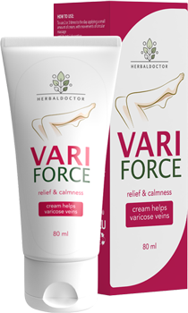

Bună ziua. Astăzi vreau să vorbesc despre vene varicoase. Întrucât tot mai multe femei vin la mine cu rugămintea de a le ajuta în ascunderea venelor varicoase pe picioarele lor. Am fost foarte interesată de subiectul venelor varicoase și am decis să obțin cele mai multe informații despre această problemă.Mai ales că, am fost uimită de nivelul răspândirii . Studii recente de la Universitatea din Edinburgh au arătat că mai mult de 67% dintre femeile din țările UE suferă de vene varicoase.
Când am aflat despre această cifră, am fost șocată! Mai mult de jumătate dintre femeile din Europa - aceasta este deja o epidemie adevărată.
Cine este mai predispus la venele varicoase?
Varicele se întâlnește mai ales la femei. Cu toate acestea, în ultimul timp, afecțiunea începe să afecteze bărbații. Datele nu se aplică bărbaților - sportivilor care sunt predispuși la vene varicoase. Câți bărbați suferă de vene varicoase? Aproximativ 24%!
- expert - cosmetolog Ana Moraru
Printre factorii cei mai critici ai apariției varicelor se numără munca "în picioare", supraponderabilitatea și stilul de viață sedentar.
Simptomele venelor varicoase
Cea mai bună strategie este să recunoaștem și să acționăm la timp. Am decis să fac un studiu cu privire la cele mai pronunțate și comune simptome ale venelor varicoase. Am vorbit cu mai mulți flebologi și am lansat un chestionar.
Cele mai frecvente simptome, fără a ține cont de manifestarea externă, au fost:
- - furnicături
- - amorțirea picioarelor
- - durere pulsantă sau arsură la nivelul extremităților
- - Spasme musculare
Experiența personală
Foarte des, femeile acordă atenție sănătății picioarelor numai atunci când venele de pe picioare sunt deja într-o stare deplorabilă. Simptome cum ar fi spasmele și amorțeala picioarelor pe care le confundă cu oboseala simplă după o zi aglomerată.
O altă mare problemă - femeile nu înțeleg pe deplin gravitatea situației. Dacă pe picioare apare o plasă venoasă, ele îmbracă pantalonii. Astfel, ascund acest defect "cosmetic", uitând de consecințele grave ale venelor varicoase.
Varicele venoase nu sunt doar vene urâte, benzi albastre și o grilă pe picioarele lor. Închiderea ochilor față de această problemă este imposibilă. Dacă de neglijat venele varicoase, va fi foarte dureros nu numai picioarelor, dar și întregului corp. Poate ajunge și la tromboză.
Remediul nou pentru venele varicoase
Am avut plăcerea să vorbesc cu o femeie care mi-a completat chestionarul despre simptomele venelor varicoase. Ea a spus că a luat parte la testarea unui nou remediu antivaricos, .
Crema s-a dovedit super eficientă. Avea dureri și crampe în picioare și, la sfârșitul testării, au trecut umflarea venelor. Au dispărut, toate manifestările externe, cât și interne ale venelor varicoase.
Ea a semnat un acord de nedivulgare și, prin urmare, a reușit să-și spună povestea doar peste două luni de la terminarea testării.
Remediul nou s-a dovedit a fi mai eficient decât multe branduri date publicității.
| Studiul Universității din Edinburgh: |

Venoruton |

|
| Efect simultan | Ameliorează durerea | Ameliorează durerea și edemul |
| Efecte secundare | Iritație, alergie, mâncărime | Fără efecte secundare |
| Contraindicații | Sensibilitate crescută la ingredientele preparatului | Nu are contraindicații |
| Mod de acțiune | Ameliorează iritarea | Tonifică și curăță pereții vaselor sanguine |
| Efect de lungă durată | antiedemic și anestezic | Îmbunătățește circulația sângelui |
Crema afectează totul și nu doar elimină durerea, ca majoritatea concurenților. Ajută la eliminarea chiar a cauzelor venelor varicoase.
Ea a ajutat mai mult de o mie de femei din întreaga Europă. Crema a devenit o alternativă excelentă la procedurile chirurgicale costisitoare.
Aș dori să rezumez, nu are rost să tărăgănați dacă, aveți unul sau mai multe simptome din această listă. Varicele este o problemă serioasă.
Valeria Babin
Posted 8 hours ago
Am avut așa ceva cu sora mea. Când a apărut steluța venoasă, ea a decis să o ascundă și nu, așa cum i-am spus să o vindece. Iar când a început edemul și picioarele au început să o doară, a început să se gândească. A purtat ciorapi speciale, a încercat tot felul de unguente.Dar a ajutat-o doar, . Ea alerga acum, ca și în tinerețea ei! Picioarele ei sunt sănătoase și frumoase! Nici-o stea varicoasă! Picioarele ca la model!
Eugenia Petrachi
Posted 9 hours ago
Scrieți-mi, cât de mult de folosit crema, ? Am varice puternice. Mi-am cumpărat pilule speciale și gel anti-varice. Am băut timp de o săptămână și nu am observat încă că ajută , venele pe picioare sunt la fel de albastre. Picioarele dor mai puțin, iar edemul pare să fi devenit mai mic, dar să dispară totul - așa ceva nu există. Pentru operație bani nu în special n-am. Și încă în ce stadiu de varice se poate de uns ? Dintre simptome am furnicături, umflături, crampe și umflarea venelor. Mulțumesc pentru răspuns.
Valeria Babin
Posted 9 hours ago
Bună ziua, Eugenia! Sora a spus că crema foarte repede ameliorează durerea. Îndepărtează treptat umflarea, principalul lucru este să-l folosești în mod constant. Despre stadiul în care poți folosi crema, nu știm. Citește pe site, iată un link pentru tine. Tocmai acolo am și comandat, . Nu ezita, crema este foarte bună. O recomand foarte mult. Ea chiar și fără pilule pentru venele ar trebui să vă ajute.
Tatyanna Wright
Posted 10 hours ago
Da! Da! crema este o crema foarte bună! M-am gândit recent cum să-mi tratez venele varicoase. Așa de tare picioarele mă dureau iar venele deveneau teribile. Mă gândeam să merg deja la flebolog, să fac operație. Atunci soțul meu a găsit undeva această cremă și a propus de folosit această cremă mai întâi. Ce aveam de pierdut? Nimic. Totul a decurs fără operație! Crema a ajutat! Nici măcar n-am crezut la început. Toți se temeau că venele din nou se vor umfla și picioarele vor durea sau vor fi bolnave; Dar nu! totul este bine!